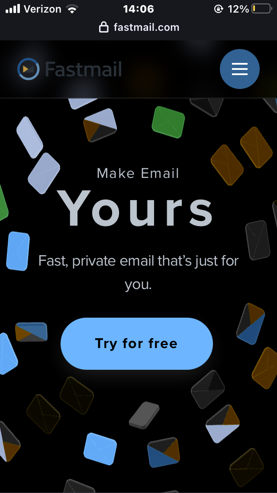

Fitt's Law
Security.org
How Strong Is My Password?The "How Strong Is My Password?" tool on Security.org makes good use of Fitt's Law. A very simple way to streamline the experience on your webpage is to make the primary tool on your website large and obvious. This is extremely useful when a particular webpage is simple and not very complicated.
Hick's Law
Fast Mail
Fastmail Login Fastmail.com is an excellent example of using Hick's Law to make their webpage more friendly for first-time users. There is only a single option on the main body of the webpage: a "Try for free" button. This is very useful for companies like fastmail who want to encourage their web traffic to sign up for their service.
Rule of Thirds
Google Pixel
Google Pixel HomepageGoogle's Pixel website makes frequent usage of the rule of thirds at the top of their webpages. They accomplish this by positioning the subject in the left or right third of the image's layout. This is especially important for a sales website which needs to display the product clearly and in a visually interesting way.